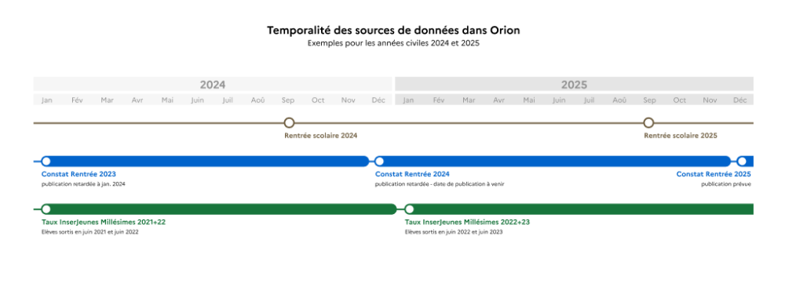

Les sources de données et leur couverture dans Orion
Quelles sont les sources des données affichées dans Orion ?⚓
Orion centralise des données à la fois éducatives et économiques pour la voie professionnelle initiale, issues d’environ trente sources différentes, notamment la liste des diplômes professionnels, le constat de rentrée scolaire, les zones géographiques, etc.
Comment est construite la liste des formations ?⚓
La liste des formations utilisée dans Orion est bâtie à partir de la liste officielle des diplômes publiée en open data et mise à jour chaque mois par la DGESCO pour lister toutes les certifications (Code Diplôme, RNCP, Diplôme, Libellé de la formation). Des traitements de fiabilisation sont ensuite effectués sur cette liste :
Si le Code Diplôme est vide, on va le chercher dans la Base Centrale des Nomenclatures (BCN) qui est le Référentiel national des concepts utilisés dans les applications de gestion et les opérations statistiques ;
Les CPC ou commissions professionnelles consultatives sont harmonisées (majuscules, ponctuations, …). Au nombre de onze, elles sont chargées d'examiner les projets de création, de révision ou de suppression de diplômes et titres à finalité professionnelle délivrés au nom de l'État.
Remarque - Formation en différents dispositifs⚓
Dans Orion, on considère comme plusieurs formations distinctes les déclinaisons d’une même formation en différents dispositifs (en nombre d’années de formation).
Comment est construite la liste des établissements ?⚓
Chaque formation identifiée comme enseignée dans un établissement est stockée au niveau le plus fin possible (établissement) pour pouvoir être comptabilisée également aux niveaux agrégés de la formation, du dispositif et du niveau de diplôme.
Un travail d’appariement est nécessaire pour créer cette base des formations par établissement : dans le constat de rentrée c’est le MEFSTAT qui est l’identifiant de la formation alors que dans la liste officielle c’est le code diplôme. On passe donc par la BCN NMEF pour faire le rapprochement. Pour lister les établissements qui dispensent les formations, nous nous basons sur la liste officielle des diplômes et nous recherchons les établissements et leurs formations (couple UAI_CD) dans le Constat de rentrée fourni par la DEPP.
Les informations de chaque établissement sont récupérées depuis 2 sources :
par défaut pour le libellé : la base ACCE de la DEPP ;
par défaut pour la localisation géographique : idéo-structures de l’ONISEP (secondaire et supérieur).
Quelle part des effectifs est couverte par les indicateurs affichés dans Orion?⚓
La proportion des effectifs couverte par les indicateurs dans Orion avoisine les 90%, elle varie légèrement selon les indicateurs considérés.
Indicateur | Couverture régionale moyenne |
|---|---|
Taux d'emploi à 6 mois | 87% |
Taux de poursuite d'études | 90% |
Taux de devenir favorable | 90% |
Taux de pression | 92% (hors BTS et privé) |
Taux de remplissage | 78% |
Quels effectifs ou formations ne sont pas pris en compte dans les taux InserJeunes ?⚓
Les effectifs que les indicateurs InserJeunes ne couvrent pas sont :
Formations avec moins de vingt élèves en dernière année sur les 2 millésimes considérés (insuffisamment représentatives) ;
Soit en effectif de rentrée (pour le taux de poursuite d'études et le taux de devenir favorable) ;
Soit en nombre de sortants de formation (pour le taux d'emploi à 6 mois) ;
Formations sous la tutelle des ministères de l'Agriculture, de la Souveraineté alimentaire et de la Mer ;
Diplômes hors du périmètre statistique d’InserJeunes (c’est à dire hors BAC PRO, CAP, MC, BTS). ;
Formations nouvellement créées ;
Établissements privés hors contrat ;
Établissements dans la région de Mayotte ;
Sortants en emploi non salarié ;
Sortants en emploi à l'étranger.
Remarque - Sortants dans le secteur public⚓
Depuis 2022, les sortants insérés dans l’emploi du secteur public sont intégrés aux taux InserJeunes
Comment l’apprentissage est-il pris en compte dans Orion ?⚓
Les effectifs en apprentissage ne sont pour l’instant pas fournis par la DEPP et donc non disponibles dans Orion. L’information disponible, qui est affichée, précise seulement si une formation d’un établissement propose la voie apprentissage ou non. Par conséquent :
Dans la page panorama Établissement, les données InserJeunes de la voie scolaire incluent à la fois des classes 100% voie scolaire et des classes mixtes voie scolaire/apprentissage ;
Pour ces dernières les taux d’emploi et de poursuite d’études correspondent à l’ensemble des élèves, y compris en apprentissage ;
Les effectifs affichés correspondent toujours et uniquement aux élèves de la voie scolaire, et dans le cas de classes mixtes excluent la partie des élèves en apprentissage ;
La page panorama Domaine de formation donne bien des taux distincts entre voie scolaire et apprentissage, car agrégés à une maille régionale.
De quand datent les différentes données et quand sont-elles mises à jour ?⚓
Il y a principalement 2 temporalités pour les données d’Orion, selon leur nature :
Les indicateurs associés aux effectifs viennent du constat de rentrée, que nous obtenons en général vers décembre ou janvier de l'année scolaire en cours. Ce sont donc des données récentes (ex : début 2025, les effectifs sont ceux de la rentrée scolaire 2024). Cela inclut notamment l’effectif en entrée, le taux de pression, le taux de remplissage, etc ;
Les indicateurs liés à l’insertion et à la poursuite d’études (InserJeunes) se mesurent sur des groupes d’élèves ayant déjà terminé leur formation, ils se rapportent donc à des années scolaires antérieures (ex : début 2025, les taux affichés sont ceux des groupes d’élèves sortis en 2022 et 2023, cumulés). Ils sont mis à jour chaque année autour du mois de janvier. Cela inclut le taux d'emploi à 6 mois, le taux de poursuite d'études, le taux de devenir favorable, la valeur ajoutée, etc.
